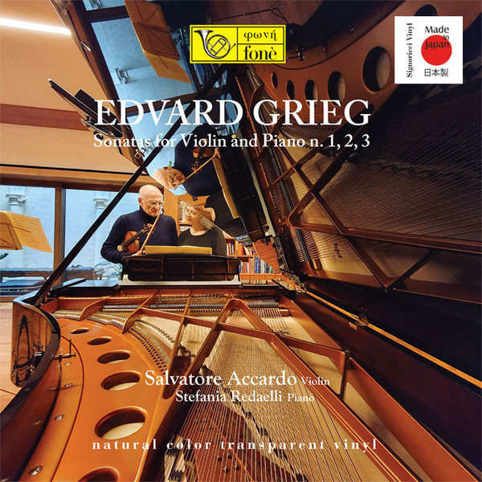

LP
Sonatas for Violin and Piano No.1, 2, 3
Edvard Grieg, Salvatore Accardo, Stefania Redaelli
Media: — · Sleeve: —
—
Personal
Discogs SuggestedCA$392.64
Discogs MedianCA$392.64
Discogs HighCA$392.64
- Physical Copy ID
- BB-LP-102
- Year
- 2022
- Label
- Fonè
- Catalog #
- Lp 154
- Country
- JPJapan
- Genre / Style
- Classical